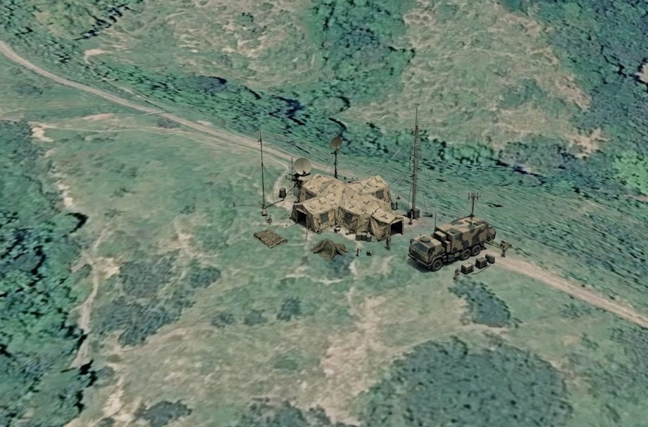
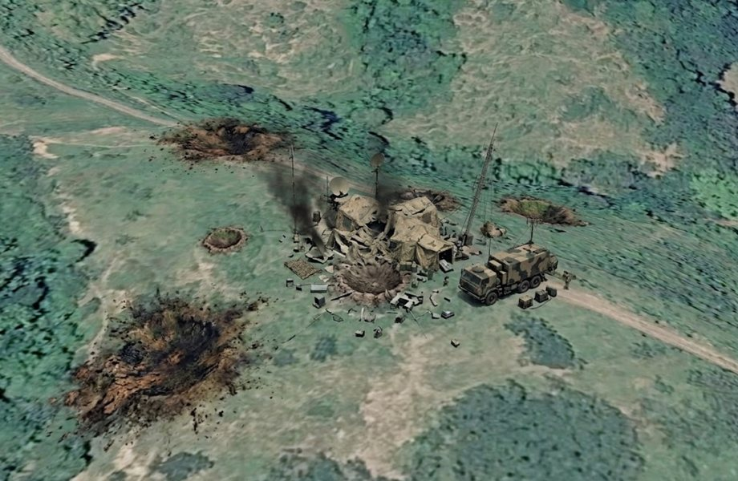
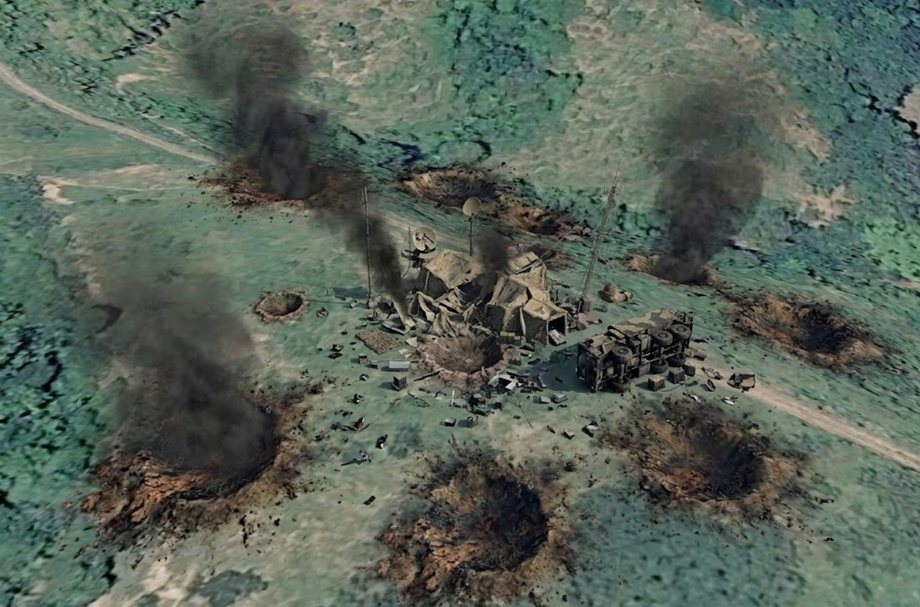

Phase 4: Assess
Assessment runs through all four functions of D3A, not just the last one.
We do not build one plan and hold it. New guidance, a new detection, a result we did not expect — each one can change what we do next. When assessment shows the commander's guidance has not been met, decisions made in Decide are reopened.
| Operations process | D3A | ||
|---|---|---|---|
| Continuous assessment | Planning | Decide | In Decide, we adjust the plan when information changes, based on continuous assessment. |
| Preparation | Detect | In Detect, we adjust when we assess new information as it is detected. | |
| Execution | Deliver | In Deliver, we make recommendations following attacks. | |
| Assess | And at the end of the mission, we assess our overall targeting strategy's measure of performance and measure of effectiveness. |
Combat assessment
After each engagement, we conduct a combat assessment. A combat assessment is specific to an engagement.
| 3 parts of combat assessment | The question it answers |
|---|---|
| Battle damage assessment (BDA) | What did the attack do to the target? |
| Munitions effectiveness assessment | Was our weapon, our munition and our method the right choice? |
| Re-attack recommendation | Do we strike it again, strike something else, or change the plan? |
Battle damage assessment
| Three elements of BDA | |
|---|---|
| Physical damage | How much of the target was physically damaged? |
| Functional damage | Can the target still do its job, and for how long? |
| Target system | What has the attack done to the enemy capability this target belongs to? |
Task 4.1 — Assess the engagement
NOT DONE


Before the attack
The enemy battalion command post, prior to engagement. Three tents, two satellite dishes, a communications mast and a command vehicle.
Following the first engagement
Physical damage assessment
Functional damage assessment
Target system assessment
Munitions effectiveness assessment
Re-attack recommendation
Following the second engagement
Physical damage assessment
Functional damage assessment
Target system assessment
Munitions effectiveness assessment
Re-attack recommendation
Measure of performance and measure of effectiveness
Combat assessment judges one engagement. Measure of performance and measure of effectiveness judge whether the targeting strategy as a whole is working.
| Measure of performance (MOP) | Measure of effectiveness (MOE) | |
|---|---|---|
| The question | Are we doing things right? | Are we doing the right things? |
| What it measures | Task performance. Was the action taken, and was it done to standard? | Change in the enemy, in what he can do or in how he behaves. |
| How it is made | Usually counted. Rounds fired, missions sent, minutes taken. | Usually observed and interpreted. Often a trend rather than a single number. |
| From this operation | The fire mission reached the M101 105 mm howitzer battery four minutes after the report arrived, and the battery fired. | The ATGM section could not engage our vehicles while they were on the bridge. |
The two can disagree, and that is why we measure both. At T-0:55 the mission went to the right battery within four minutes and the rounds landed on the ATGM position. Every measure of performance was met. The measure of effectiveness was not, because at T-0:30 the section was still able to engage the crossing. Counting missions alone would never have shown it.
Task 4.2 — Performance or effect
NOT DONEEach line below is a statement about Operation RIVER GATE. Decide whether it is a measure of performance or a measure of effectiveness.
This measures our own action against a standard. It says nothing about the ATGM section.
Nothing here has changed for the enemy. The line measures how quickly we carried out our own task, and that is performance.
This is the effect the commander's guidance asked for, written as a change in what the enemy can do.
No friendly task is named here. The statement is about the enemy's capability, and a change in enemy capability is an effect.
The task was carried out. Whether it achieved anything is a separate question, and at T+1:00 no sensor is watching the supply point to answer it.
The line stops at the moment our rounds finished. It measures the task, not what the task achieved.
We never see the tubes. The change we can observe is the enemy's fire, and stopping that fire is what the commander wanted.
Nobody's task is being measured. This is a change in enemy behaviour, and that is an effect.
This is the end state the commander set. Every task in the operation exists to serve it.
No task is named here. The line states a condition that either holds or does not, which makes it an effect.